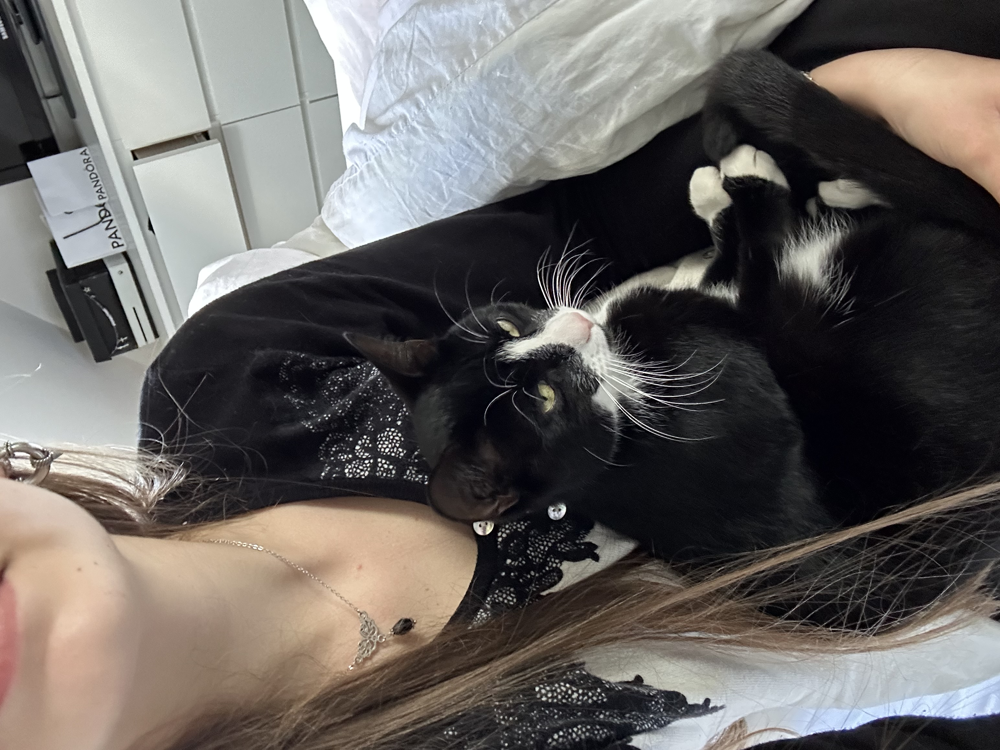
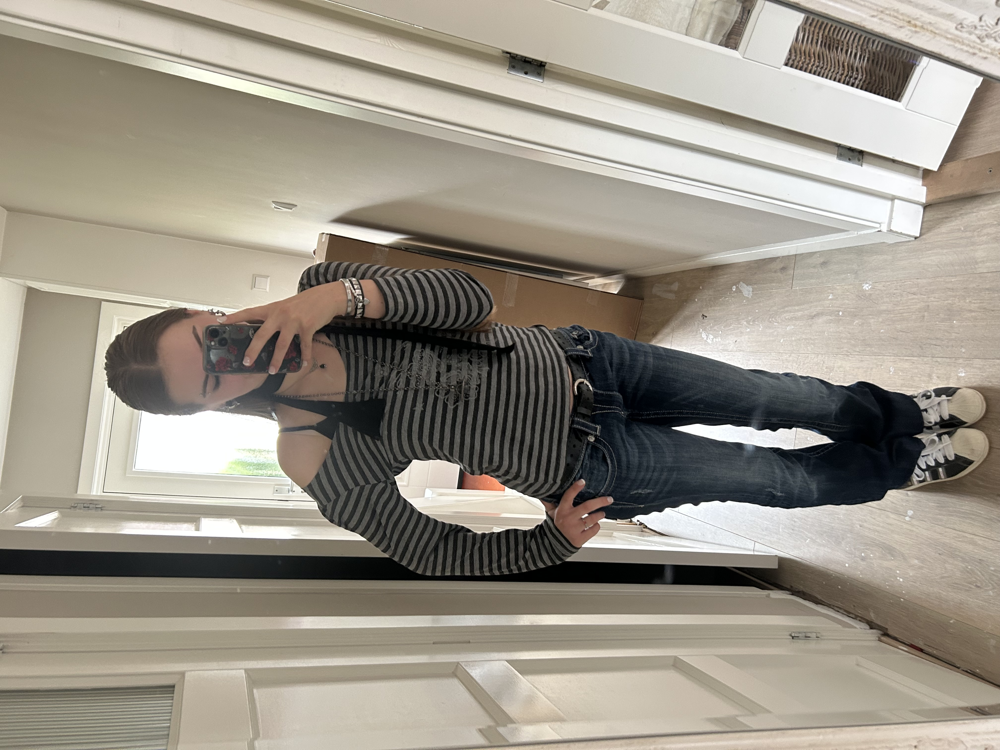
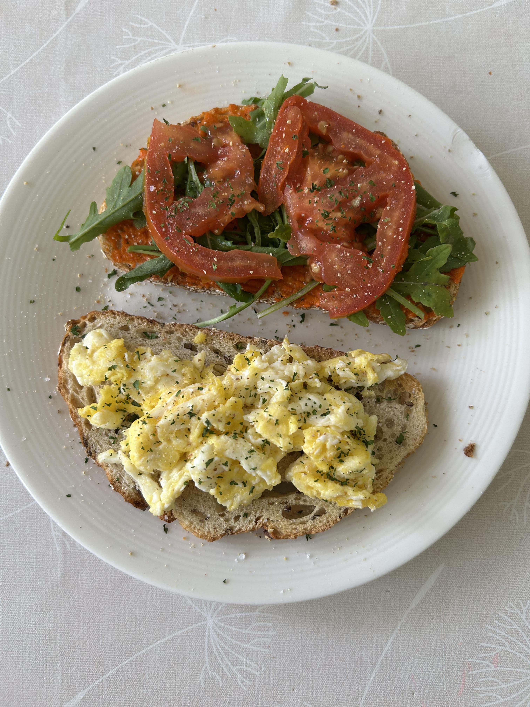

Hey guys, ik ben Loes en ik ben 17 jaar oud. Mijn hobbies zijn naar muziek luisteren, gamen, gitaar spelen en helaas veel werken.
Mijn favoriete game is Overwatch2, ik speel het bijna ellke dag maar ik ben niet zo goed. Verder houd ik dus veel van muziek, mijn favoriete band is Radiohead en zij gaan binnenkort op tour maar ik heb helaas geen kaartjes.
Verder is mijn favoriete solo artiest Jeff Buckley, hij heeft een hele sterke mooie stem en zijn muziek raakt mij heel erg.
Daarnaast probeer ik gitaar te spelen maar doordat ik veel aan school zit, werk heb en verder ook in mijn vrije tijd game heb ik niet meer zoveel tijd over voor mijn gitaar, dat is wel jammer.
Daarnaast vind ik mode heel leuk, ik houd veel van de oude 2000s kleding en ik heb 'veel' piercings.
Wat ik ook heel leuk vind om te doen is eten maken, niet persé avond maaltijden maar vooral lekkere broodjes en toetjes maken.
Verder ben ik een echte dierenvriend, ik heb 5 katten en een hond en ben dan ook vegetariër.
Ten slotte werk ik bij de jumbo, ik werk veel zodat ik later alles kan betalen zonder zorgen, denk hierbij aan een studie/huisje/auto.
Nu genoeg over mij, op deze site worden er vier onderwerpen behandeld voor de informatica les, veel plezier met lezen!
(klik hier beneden voor mijn favoriete album)
  